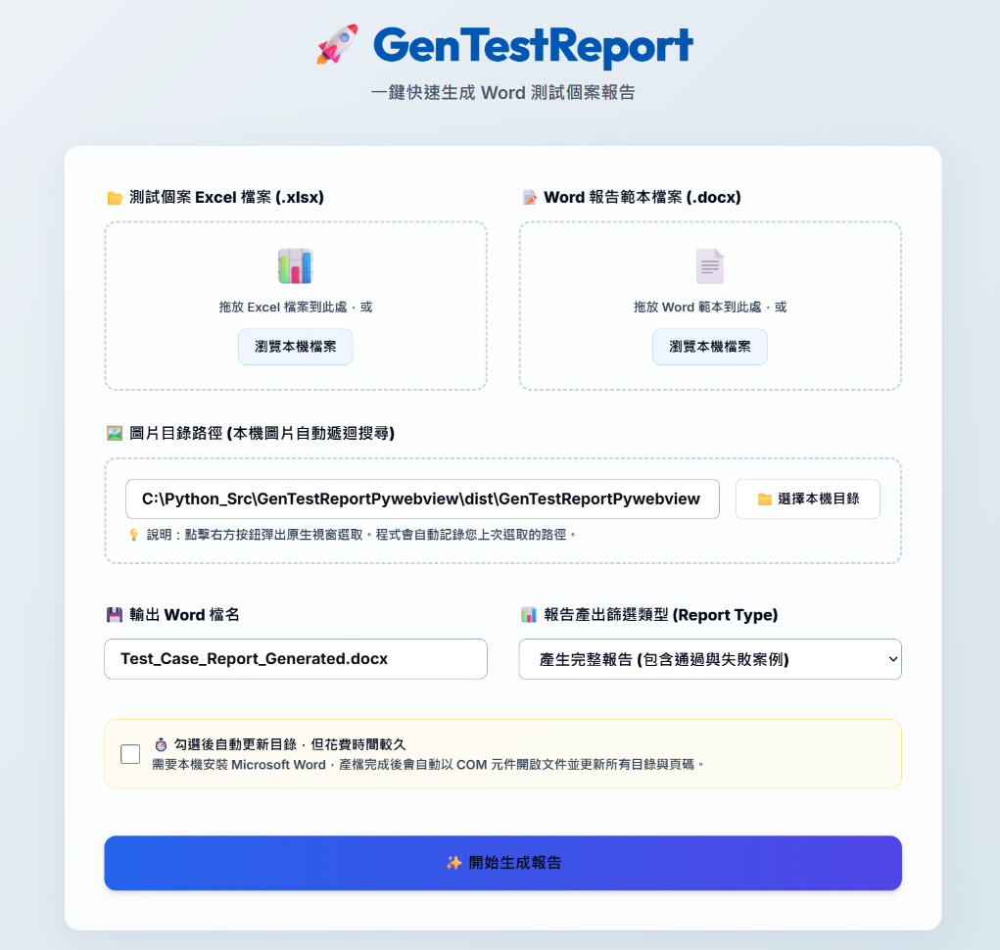

我是 Ellen
資深研發與測試專家。
我的興趣
平時下班時間我每天都會閱讀《彭蒙惠英語》來加強聽力和閱讀能力，並增加單字量。我深信持續的學習是保持思維敏銳的最佳方式。
最近正在閱讀一本書《心態致勝：全新成功心理學》，從中學到了成長型思維的重要性，覺得收穫很多，對工作與生活都有了新的啟發。
在其他休閒時間，我喜歡看介紹旅遊和美食的 YouTube 影片，透過影片探索世界各地的風土民情，這是我放鬆身心並獲取生活靈感的方式。
Ellen 的標籤
生活小確幸 🌈
職涯歷程
資深工程師 / QA 測試專家
凌群電腦
早期主導大型 C# 資料運算分析與轉檔專案。 目前從事 QA 自動化測試，包含 Robot Framework UI 腳本、API 自動化 (Python+Pytest) 以及 JMeter 壓測設計，並使用 Python 與 Golang 開發輔助測試工具。
軟體工程師 / Internet 程式設計師
福億通訊
負責維護與設計 Embedded Devices 網頁設定介面 (ASP Web)、CGI/CLI 程式以及廠測程式 (wxWidgets & C)。網頁介面開發包含：設備功能設定、設定精靈、選單設計及多版型整合。
伺服端採用 C 語言 與公司研發之 Small Code Template Engine 開發；客戶端使用 YUI 2 / jQuery 搭配 Ajax 技術。
技術亮點：廠測程式流程全面採 狀態機 (State Machine) 設計，僅透過狀態切換與 Timer 驅動，在不使用多執行緒的情況下精準呈現複雜的動態流程。
技術員
國網中心 NCHC
參與雲端技術 (Google File System + MapReduce + Bigtable) 相關研究。深入研究 Hadoop、HBase/Hypertable 分散式儲存與搜尋系統應用。開發語言包含 Java, PHP, Bash Shell Script 並涉及 Stored Procedure。
工程師
倍捷
開發 Embedded Web Server 外掛功能。基於 GoAhead Web Server 框架設計一整套 SDK 介面，驅動底層 Bash Shell Script 調整系統組態。實作類似 CGI 模式，搭配 Javascript 引用 SDK。
系統分析師
榮電
負責政府機關案件管理內部網站規劃及建置。執行系統分析文件設計與程式撰寫。資料庫以 MS SQL 及 MySQL 為主，語言為 Java Servlet 搭配 JSP、Javascript 及 VB Script。
程式設計師
敦緯數位
開發期貨選擇權系統 (Client-Server 架構)。伺服器端採用 Unix Solaris 與 Sybase/Oracle；以公司自研 Middleware 結合 Borland C++ Builder 開發 Windows 客戶端介面。
碩士研究：醫療資訊標準化
針對電子病歷存取規則的複雜性，我在政大資科研究期間設計了一套可設定式的編輯環境。這項研究的核心價值在於將控管規則制定為標準格式，並能靈活套入各種醫療軟體，提升系統的安全性與通用性。
教育背景
國立政治大學 | 資訊科學系
2004/9 - 2008/1
國立台中科技大學 | 資訊管理科
1994/9 - 1999/6
.NET Server Side
- Multi-Threads 通訊 Expert
- 大型檔案解析轉檔 Expert
- Design Pattern Expert
- Custom Socket Lib Expert
Java Server Side
- Struts 2 / Hibernate Expert
- Spring (IoC/AOP) Proficient
- Servlet / Filter / EJB Expert
- Hadoop/HBase/Hypertable Experienced
QA & Automation
- JMeter 壓測設計 Expert
- Robot Framework Expert
- Pytest API 自動化 Expert
- Python/Golang 工具開發 Expert

GenTestReport 測試報告自動產生器
能將測試報告 Excel 檔轉換為格式完整的 Word Doc，大幅減少手動整理報告的時間。擁有 Hybrid Desktop Application Architecture，以 pywebview 打造輕量原生桌面應用程式。
旅行社客製化 ERP 系統
使用 Struts 2 + Hibernate 打造。從 Access 2010 雛形快速開發，並成功轉換為基於 Java 技術的企業級網頁版。
大型資料運算轉檔系統 (C#)
運用 Multithread Programming 技術處理大型分析專案。
MULTITHREADRobot Framework UI 自動測試
設計 UI 自動化測試腳本，確保系統穩定性。
AUTOMATIONAPI 自動化測試設計
利用 Python + Pytest + Request 建立高效 API 測試架構。
PYTESTPython 輔助自動化工具集
RobotGUI 與自動化測試分析報表工具。
PYTHON APPS2026 年已完成事項
Goals Achieved · 2026
GenTestReport
測試報告自動產生器，能將測試報告 Excel 檔轉換為格式完整的 Word Doc，大幅減少手動整理報告的時間。
AI 產製測試個案與解析規格書
運用 AI 工具自動分析系統規格書，產生測試個案，並在自動化測試執行後自動輸出分析報告，全面提升 QA 效率。
Ellen 的未來規劃
✨ 持續進行中的計劃：
- 啟動 API 綜合測試專案，整合自動化流程與品質監控。
- 持續精進高效能運算與現代 QA 自動化架構的心得分享。
- 準備與考 iPAS AI 應用規劃師。